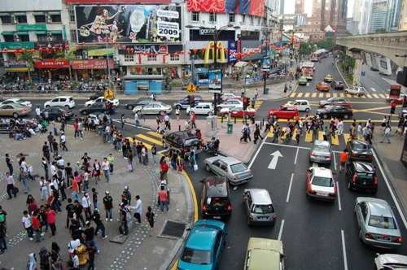
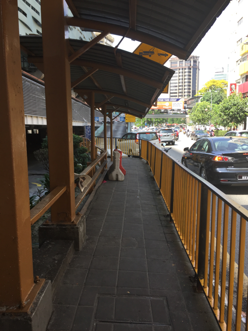
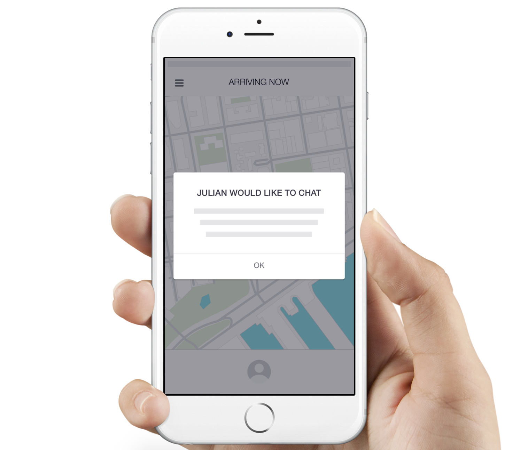
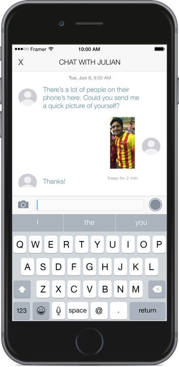
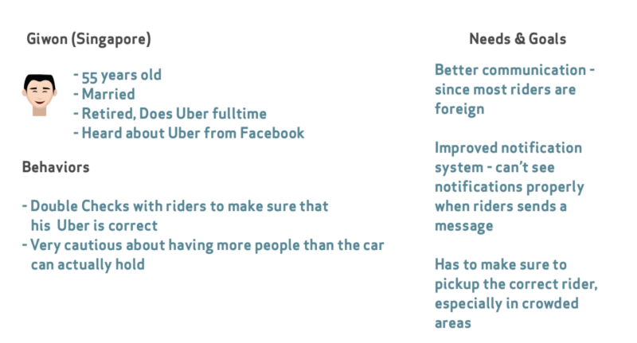
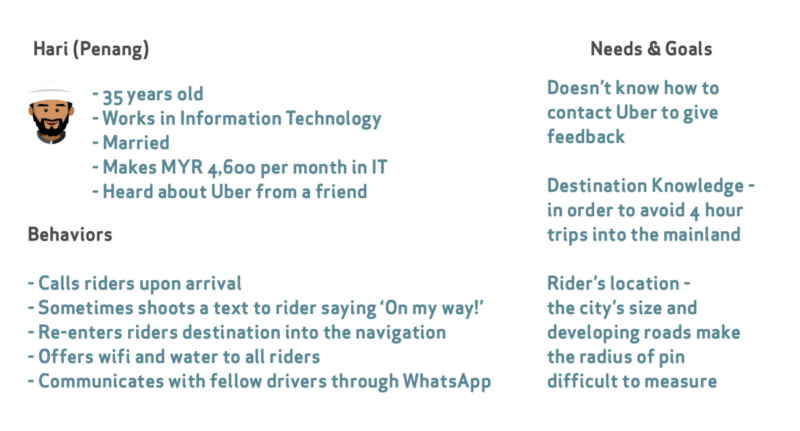
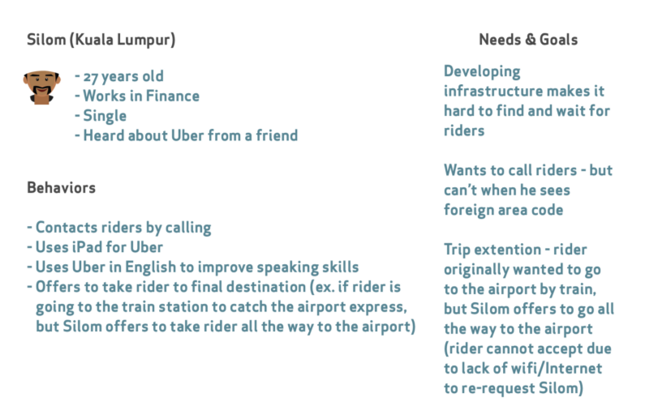

Sketch, Framer, Moleskine
● 15 of the 24 drivers work in IT, the rest in finance or banking
● All discovered Uber via a friend
● Majority of passengers are foreigners
● All are part-time
Like many drivers in Kuala Lumpur (KL), Sasindran learned about Uber from his friend, who had suddenly bought a new house.
Sasindran leased a vehicle from Uber for the first four months, but he then reinvested his earnings and bought a brand new car — along with a second house in just under 6 months.
Uber is empowering drivers in KL by letting them be “own boss of company” — as Sasindran puts it. These drivers are truly appreciative of Uber, but certainly have recommendations to further improve the ride-sharing experience.
This what Julian, our first Uber driver, told my family when he tried to pick us up from our hotel. All of our Uber drivers tried to call me upon arriving to my pin — which didn’t help the drivers in any way due to my foreign number.
Here's where that can become a real problem.
Since Julian couldn’t call me, and because Waze doesn’t tell drivers which side of the street I’m on, Julian was left to win a guessing game.
In San Francisco, Dallas, New York, or any other Western city, this may not seem like a big deal. Just make a U-turn, and you’re good to go. Not in KL. With three-way one-ways, one wrong turn could send the driver in a one-way frenzy — easily creating an additional ten minute wait.
Even when Julian came on the wrong side of the street, we were able to cross over a bridge to meet him on the other side. But here’s the guard rail we were met with:
We yelled over the passing traffic to meet on the original side of the street and Julian eventually made his way around to the hotel’s street, which was much more accessible.
Other drivers expressed a similar sentiment about the difficulty in finding and contacting riders — especially those who are foreign.
Whether or not a rider (customer?) has SIM connectivity abroad, we can assume that riders have internet of some sort already — how else would they be able to call an Uber?
Instead of the driver struggling to call, Uber can create a messaging interface so that drivers can communicate more effectively with riders. One driver, Low, even suggested that Uber integrate popular chat applications like WeChat or WhatsApp; but switching between apps could impede a driver’s safety.
If Uber implemented a new feature, say ‘UberTalk,’ where drivers could shoot a message to the passenger when parked within the radius, then it could alleviate a pain point. Here's a quick prototype.
● Whereas the drivers in Kuala Lumpur worked in IT or Finance, the drivers from Singapore came from the service industry (such as flight attendants or warehouse operators).
● About 37–50 years old
● Equal balance between full time and part time drivers
Let’s zoom in on one Singaporean driver in particular: Makhan (selfie on the right) who summed up the major issues.
I ran into this same problem multiple times. Since Uber doesn’t provide me with the color or picture of the car, I have to squint my eyes and scan the street for a Honda logo or a license plate number. With foreign cars likes Protons and Peroduas, the last thing I could resort to was matching the driver’s face inside the car with the 80x80 pixel Avatar that Uber provides.
Instead of a ‘tiny notification,’ as another driver named Gary described the enhancement, Uber could instead request the rider to take a seflie or picture of their location which could help the driver pinpoint where the rider is located. That image could disappear after the driver opens it in order to maintain the rider’s privacy. Here's what that could look like:
Penang, a small island on the northeast trip of Malaysia, only has 160 Uber drivers. Drivers nonetheless face a unique set of challenges.
According to Jackie (center selfie), most of drivers in Penang communicate to each other over a massive group message in WhatsApp. Here’s what they talk about:
● Police Zones
● Hotspots (Uber’s way of letting drivers know where most people are requesting rides)
● Crowded Roads. For example, the drivers let each other know about the Peak Times for Penang Hill (a main attraction) since many riders are tourists visiting the area.
Jackie said that it would be safer if Uber provided a messaging service not only between drivers-riders, but also for the community of drivers in areas with a growing Uber workforce. This way the drivers would have a secure system, along with a tool to give feedback or suggestions to Uber — as Jackie didn’t exactly know how to get in contact with Uber.
As Uber just recently arrived in Penang, many people are eager to use the service. But they want to test it out first.
Prakasam, an Apple Store Manager and Uber Driver, says he gets about 20 of these calls per week. He drives about 3–5 miles to pick up this ‘rider,’ and when he gets there the rider says ‘Oh, I just wanted to see if it worked or not.’ Prakasam can’t give the rider a bad rating since the rider simply cancels the drive after seeing how the service works. And the rider doesn’t get billed as long as he cancels within 6 minutes. Even if the same rider test calls over and over again, Prakasam doesn’t want to cancel the trip or else his own rating drops.
For growing areas, Uber often has promotions where a first-time rider receives credit just for signing up. In order to stop the test calls, that credit could be applied to the test drive so that the driver is still compensated for his or her time.
Penang is only a one hour flight away from Kuala Lumpur, the capital of Malaysia. This close proximity allows people in Kuala Lumpur to order Ubers that are in Penang.
Parakasam said that one he received a request from Penang’s Airport and ended up waiting ninety minutes for the rider to show up. He later found out that the rider was flying into Penang from Kuala Lumpur and wanted to pre-book a driver before he landed. This puts Parakasam in a bind.
If he cancels the trip, his rating drops. So he has to wait and take a chance with all of the other calls he gets from the airport in the future.
This could be an issue with Uber’s mapping service. Regardless, there should be a continuous feedback loop to avoid 0 star ratings along with test calls.
Here’s a diagram of a driver’s personas, needs, and goals I’ve created for all three cities based on my research:
  Overall, Uber was an amazing experience and definitely the best way to travel internationally. I don’t represent Uber in any way. I enjoy talking to people, learning about their problems, and making their lives better through design.